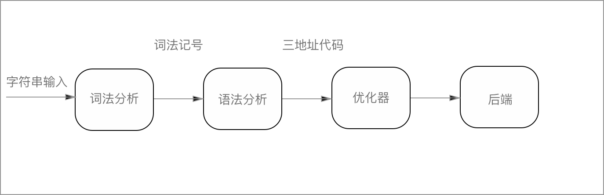

熟悉一下Lex 和 Yacc的用法
博客地址： http://lfkdsk.github.io代码地址： https://github.com/lfkdsk/CodeParse
tips：阅读此篇需要一定的C语言基础和正则表达式的知识
首先上一篇提到了第一步的工作是要使用 Lex 和 Yacc 进行编写，所以说第一步首先简单的学习一下 Lex & Yacc 的用法，Lex & Yacc 是一套很古老的编译生成套件，大约在上个世纪80年代就有了。但是并不过时，我们今天生成编译程序仍然能够用得上。Lex & Yacc 如果简单的概括来说，Lex 负责词法分析，就是把输入串的纯字符转化为 词法记号流， 而 Yacc 负责语法分析，将词法记号流处理成一种树形结构，叫做语法分析树的数据结构中。至此简单来讲的前端工作就基本完成了，代码就有机会被转换成一种三地址代码的形式，经过优化器的优化生成机器指令就可以运行在机器中了。
词法记号：一般被称作Token，是指对于输入串的内容进行词素分类，比如说数字、字符串、保留字（关键字）、保留字之间还有不同的 Token
三地址代码：一些语言转换机制的中间形式，每行代码只有三个对象（两个运算分量、一个操作符组成），转换这种形式能够便于机器指令的生成。
刚才说了这么多那Lex & Yacc帮我们做了什么呢？答案是在我们代码的辅助下几乎都做了，首先在前端方面，根据Lex & Yacc 进行了词法和语法分析，在后端代码被直接生成了C语言代码，借助C语言优秀的编译链可以轻松的生成的程序。

具体使用
上面我们介绍了Lex & Yacc的功能，毫无疑问Lex & Yacc是非常完美的编译生成程序，接下来我们来介绍一下Lex & Yacc的用法。
推荐书籍:O’Relly出版的 Lex & Yacc 是一本介绍 Lex 和 Yacc功能非常好的书，1994年出版，我在图书馆淘到了2002年的第二版。
Lex:
Lex的使用方法如图所示，分为三个区域：
- 定义部分：和普通的C语言程序区别不大，存放定义，和在接下来Lex生成的程序中使用的变量和方法的导入。
- 规则部分：规则部分起始于”%%“符号，终止于”%%“符号，通过书写正规式匹配文法符号，其中使用C程序处理匹配内容，接收到的符号保存在yytext[]中。
- 子程序部分：最后一个%%后面的内容是用户子程序部分，可以包含用C语言编写的子程序，而这些子 程序可以用在前面的动作中，这样就可以达到简化编程的目的。这里需要注意的是，当编译时不带-ll选项时，是必须加入main函数和yywrap（见后文）。
只说概念不太直观，我们来写一段程序来试验一下，这个程序我们只用到了Lex。
1.首先是定义区：
%{
#include <stdio.h>
unsigned charCount = 0, wordCount = 0, lineCount = 0;
%}
/* 这里是一个替换的规则 */
/* 不是 空格、制表符、换行符的非空内容 */
word [^ \t\n]+
eol \n
这部分很简单我们导入来C的基础输入输出库，定义了几个全局变量字符数，单词数、行数。 定义了两个规则，第一个代表单词（所有空格、制表符、换行符取反的非空集），一个是输入结束匹配换行符。 2.规则区：
/* 规则区 这里面的注释不能顶格写 */
/* yyleng 是拿到的输入长度 */
{word} {
wordCount++;
charCount += yyleng;
}
{eol} {
charCount++;
lineCount++;
}
/* 匹配其他字符 */
. {
charCount++;
}
规则区对三种类型进行了匹配，并用括号里的方法对计数进行更新。
3.用户程序区：
int main(){
yylex();
printf("%d %d %d \n", lineCount, wordCount, charCount);
return 0;
}
用户程序区也很简单yylex()是Lex的内置函数，调用就可以进行匹配，每一次处理结束后就会进行一次打印。
写完这段代码后，我们用命令行调用：
$ lex word_cound.l
就会生成yy.lex.c的文件。
调用：
$ cc -o wordcount lex.yy.c -ll
进行编译就可以生成 wordcount可执行程序。
$ ./wordcount
就可以运行了。
YACC:
Yacc的文件格式类似Lex(或者说是 Lex 类似 Yacc ) ，也同样包含定义段、规则段、用户子例程段落，但是内容却有所不同。
- 定义段： 除了和 Lex 相类的C程序植入之外还包括％token、％type、％left、％right 等类型的声明
规则段： 使用BNF范式（形如lable：expression 的产生式）和C代码构成，C代码会被原封不动的复制进源程序,BNF范式由一个规则和冒号组成，相同左端的右端使用‘｜’分隔，对应的使用C语言代码作为处理代码置入。
子例程段： 用户植入的子例程段，主要负责用户动作调用的代码，会被复制到源程序中。
写一个简单的计算器：
在这个例程中我们会同时用到 Lex 和 Yacc ,这个Demo的地址在Calc中大家可以下载使用。
首先是 Lex 的代码：
%{
#include <stdio.h>
/* 这里引入的库是Yacc生成的所以一会要先运行Yacc */
#include "y.tab.h"
/* Lex 的读取模式是可以读取文件的，yywrap()这个函数就是在读取之后判断是否完毕的函数 */
/* 返回值为1代表读取完毕不再进行读取 */
/* Lex 中有这些内置函数 yylex()负责处理 yylex()的末尾会自动调用yywrap() */
int yywrap(void)
{
return 1;
}
%}
%%
/* 这里匹配了几种符号类型 返回值是一个词素Token Token定义在Yacc中 */
"+" return ADD;
"-" return SUB;
"*" return MUL;
"/" return DIV;
"\n" return CR;
/* 下面匹配的是一个整型数和浮点型数 在这种模式下0要单独写否则两种正则无法匹配到0 */
([1-9][0-9]*)|0|([0-9]+\.[0-9]*) {
double temp;
sscanf(yytext, "%lf", &temp);
/* yylval是一个内置的联合体 由程序自动生成 double_value是用户在Yacc中定义的一个double型的变量 */
yylval.double_value = temp;
/* 返回的Token */
return DOUBLE_LITERAL;
}
[ \t] ;
. {
/* 其他符号作为错误处理 */
fprintf(stderr, "lexical error.\n");
exit(1);
}
%%
上面 Lex 的代码相对于上一道题有一定的难度，但是我的注释已经非常详细了， Lex 的作用就是识别特定的 正规式然后把数字和对应的token返回给Yacc去处理。按常规这些Token是在Yacc中被处理的。、
下面我们来看Yacc的代码：
1.首先是规则区：
%{
#include <stdio.h>
#include <stdlib.h>
#define YYDEBUG 1
%}
%union {
int int_value;
double double_value;
}
%token <double_value> DOUBLE_LITERAL
%token ADD SUB MUL DIV CR
%type <double_value> expression term primary_expression
%%
%{ %}中置入的库就不用多说了 YYDEBUG＝1 是开启DEBUG模式，这样在yacc生成的过程中使用debug参数
就能看到输出的状态转移图。
接下来使用%union 设置了yylval的内容类型 里面存储了int、double的类型参数
接下来使用%token 设置了多个Token，double类型的DOUBLE_LITERAL，无类型的加减乘除，还有double类型的
各种产生式。
2.规则段落：
/* 设定的规则是逐行处理 这里的line_list能由 line 或者是line_list line 构成*/
line_list
: line
| line_list line
;
/* 一行是由一个表达式和回车组成的 这代表打印输入的表达式的结果 */
line
: expression CR
{
printf(">>%lf\n", $1);
}
;
/* 一个表达式由 term ＋ term 或者 term - term 组成的 */
/* $$ 表示左式的值 $num 表明右式中的第num个项 */
expression
: term
| expression ADD term
{
$$ = $1 + $3;
}
| expression SUB term
{
$$ = $1 - $3;
}
;
/* 而 term 由 pri * pri 和 pri / pri 组成 */
term
: primary_expression
| term MUL primary_expression
{
$$ = $1 * $3;
}
| term DIV primary_expression
{
$$ = $1 / $3;
}
;
/* 这是最原子的操作 把DOUBLE的Token的对象规约成primary_expression */
primary_expression
: DOUBLE_LITERAL
;
%%
规则段落的编写和之前的介绍是一样的BNF范式构成，对应的产生式对应于C操作代码，但是这里还有一些要解释。 * 比如将DOUBLE_LITERAL规约为primary_expression的时候我们没有任何的语义动作，其实这里是使用了一个 隐含的语义动作{ $$ = $1 }就是把对应的数据进行赋值。
- 还有就是这里的加减和乘除分开定义了，这里是用来修改文法的方式来进行处理语法的优先级问题乘除的优先级高于 加减的优先级，在下一个Demo中我们会看到利用yacc特性进行的优先级处理。
3.例程区：
int yyerror(char const *str)
{
extern char *yytext;
fprintf(stderr, "parser error near %s\n", yytext);
return 0;
}
int main(void)
{
extern int yyparse(void);
extern FILE *yyin;
yyin = stdin;
if (yyparse()) {
fprintf(stderr, "Error ! Error ! Error !\n");
exit(1);
}
}
这段落就比较简单了，yyerror()是复写了yacc的内置函数处理了打印错误的工作。 main函数作为调用的主函数 把yacc的输入流从文件改为标准输入然后运行yyparse()进行yacc的分析。
写完这两个文件之后我们调用如下命令进行编译：
$ yacc -d mycalc.y
$ lex mycalc.l
$ cc -o mycalc y.tab.c lex.yy.c -ly -ll
编译运行之后的结果：

至此我们已经学习了Lex & Yacc 的一些基础应用，Lex & Yacc 有很多用途 除了进行编译相关工作之外，对于基础的文本处理也有优势。但是我认为这个工具 没有必要进行过分的深究特性，因为特性并不复杂，而且对于开发一门语言来说 Lex & Yacc 为你处理了过多的前端工作，这让出于兴趣的开发并不是很有趣了， 所以虽然接下来会做一些lex & Yacc的练习，但是并不会以这个为主。